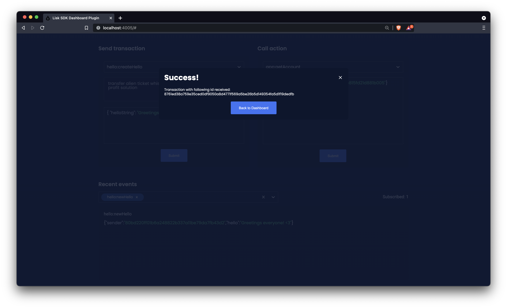

Interacting with the blockchain application via the dashboard plugin
How to conveniently interact with a blockchain application during development, by using the references/lisk-framework/dashboard-plugin.adoc.
|
Prerequisites
To use this guide, it is assumed that the following criteria have been met:
|
1. Plugin registration
Install the dashboard plugin:
npm i @liskhq/lisk-framework-dashboard-pluginNow open plugins.ts, import the Dashboard plugin, and register it with the application as shown below:
/* eslint-disable @typescript-eslint/no-empty-function */
import { Application } from 'lisk-sdk';
import { LatestHelloPlugin } from "./plugins/latest_hello/latest_hello_plugin";
import { DashboardPlugin } from "@liskhq/lisk-framework-dashboard-plugin";
// @ts-expect-error Unused variable error happens here until at least one module is registered
export const registerPlugins = (app: Application): void => {
app.registerPlugin(LatestHelloPlugin);
app.registerPlugin(DashboardPlugin);
};Save and close plugins.ts and start the blockchain application again:
./bin/run startWait until the application start has been completed.
Now it is possible to access the dashboard on the browser under localhost: 4005
|
If the WS API hasn’t been configured in the config as described in the Config guide, it is also possible to enable the WS API via the following flags: |
2. Dashboard walkabout
Go to http://localhost:4005 to access the dashboard.
2.1. Subscribing to events
At the bottom of the dashboard is the "Recent events" window, which allows the possibility to subscribe to various events by selecting them from a dropdown box.
It is now possible to subscribe to the newly created event hello:newHello

Once a new hello transaction is posted, the event is published and will show up in the window "Recent events".
It can happen that the same event is received multiple times, as shown in the example below where the hello:newHello was received 3 times.
|

2.2. Sending transactions
An additional very useful component of the Dashboard is the "Send transaction" section.
The transaction type is selected from the dropdown box.
It is now possible to try out the newly created hello asset from the guide guides/app-development/asset.adoc: hello:createHello.

Once the desired transaction type is selected, provide the passphrase of the sender account and the hello transaction asset as described below:
The passphrase is retrieved from the file accounts.json, which contains the account credentials of all genesis delegates of the hello world blockchain application.
The accounts in your accounts.json file will be different, because the file was newly created before in the guide Generating a genesis block.
|
[
{
"passphrase": "wait yellow stage simple immune primary when digital bounce coin draft life",
"address": "92ff111dfc904d1d8b077bf6e815fd21d881b005"
},
{
"passphrase": "transfer alien ticket whisper face ability rally planet town brick profit solution",
"address": "80bd220ff01b6a248822b337a11be79da7fb43d2"
},
{
"passphrase": "broccoli coast fade over atom chimney skate symptom ten rug pave marble",
"address": "252eeaf82f6d713501e561ddd437bf00a903f415"
},
// ...
]Once all the necessary parameters are provided, click on the Submit button.
If the transaction was successfully accepted, you will see the following confirmation:

To verify that the hello message was updated in the sender account, select the action app:getAccount from the section "Call action".
The action app:getAccount is part of the application actions and returns the account data for the account address that is specified in the action input.
Provide the address which is belonging to the passphrase that was used to create the hello transaction in the action input field, and click on the Submit button.

In the response, it can be seen that the hello message of the account was updated successfully.

2.3. Invoking actions
Actions are invoked in the "Call action" section.
In the previous guides the following two new actions were created:
-
The action
hello:amountOfHellosof the hello module -
The action
latestHello:getLatestHelloof the latest hello plugin
2.3.1. Invoking hello:amountOfHellos
Select hello:amountOfHellos from the dropdown menu.
You can directly click on the Submit button to view the results. It is not necessary to provide any input, because the action doesn’t require any.

As two hello transactions were already sent, the action responds as shown in the illustration below:

2.3.2. Invoking latestHello:getLatestHello
Select latestHello:getLatestHello from the dropdown menu.
You can directly click on the Submit button to view the results. Again, it is not necessary to provide any input, because the action doesn’t require any.

As expected, the plugin responds with the latest hello message that was posted to the blockchain application.

The Dashboard plugin provides more features, and most of them are very self-explanatory. For example, you can create new accounts, see all incoming transactions and forged blocks, or see general node and network information.